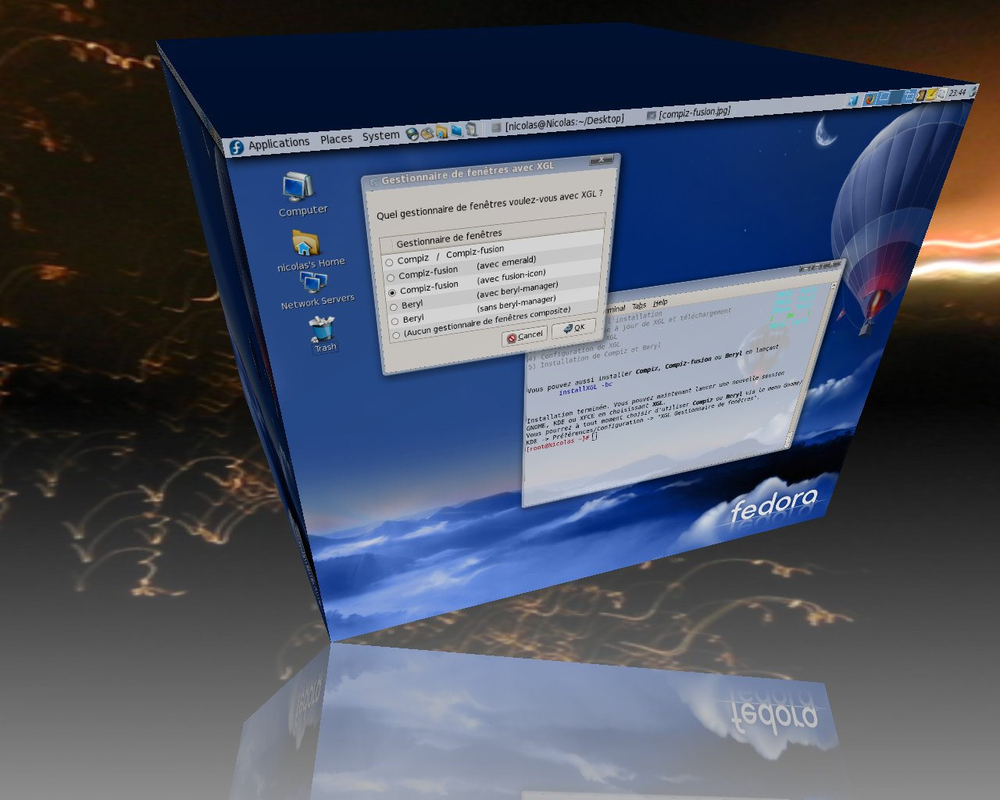
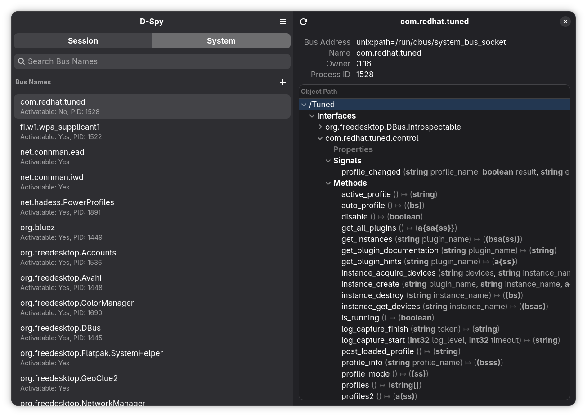

Linux 桌面与窗口系统¶
主要作者
本文编写中
参考
本章参考了以下内容：
相比于久负盛名的 Windows 与 macOS，Linux 的桌面以及其生态是独特的。本文将简单介绍 Linux 桌面与窗口系统中一些重要的概念。
X¶
以下未特殊标明的情况下，X11 协议均使用 Xorg 这个目前最主流的 X 实现。
X、X11、Xorg 的区别
在讨论的时候，我们经常能看到 X、X11、Xorg 这些术语。它们的区别如下：
- X：泛指 X 窗口系统（X Window System）
- X11：指 X 窗口系统的第 11 个版本（X Version 11），是目前仍在使用的版本，也极大概率是最后一个版本了
- Xorg：由 X.Org 基金会维护的 X11 实现，是目前最主流的 X server 实现
部分内容在主章节中有介绍
如果你想知道怎么进行 SSH X Forwarding，以及如何在容器中运行 X 程序，可以参考容器章节中的相关内容。
本部分不是 X 的开发介绍
如果对 X 的实现细节有兴趣，可以参考这个交互式的教程：xplain。
客户端、服务端与窗口¶
X 窗口系统起源于 1984 年。在那个时代，桌面环境没有酷炫的效果，相比之下，性能与资源占用重要得多。并且当时个人计算机还是一个新兴的概念，用户更多的时候需要使用终端机连接到服务器上运行任务。因此，X 的设计上包含了当时那个年代设计的局限性，并且有着独特的「网络透明性」的设计：需要显示窗口的程序（客户端）和可以给用户显示窗口的程序（服务端）是可以分离的，通过网络去连接。对于单机场景，这里的「网络」大部分时候是 UNIX socket，而在诸如 SSH X Forwarding 这种通过网络连接的场合则是 TCP socket。
默认情况下，如果你正在使用 Linux 桌面，那么默认连接到的 socket 则为 /tmp/.X11-unix/X0（对应环境变量 DISPLAY=:0）。
X 的抽象套接字支持
Linux 支持「抽象套接字」（abstract socket），即允许 Unix socket 绑定到一个不在文件系统中的地址（正常的 Unix socket 需要将地址设置为一个文件路径）。在编写代码时，将 bind() 路径（sun_path）的开头设置为 NULL 就表示抽象套接字。可以查看 /proc/net/unix 文件，其中以 @ 开头的条目则是抽象套接字。
可以注意到，默认情况下，X 服务端会同时监听 /tmp/.X11-unix/X0 和 @/tmp/.X11-unix/X0：
$ cat /proc/net/unix | grep X11-unix/X0
000000002c61e829: 00000003 00000000 00000000 0001 03 379918 @/tmp/.X11-unix/X0
（省略）
0000000055982f40: 00000002 00000000 00010000 0001 01 20744 /tmp/.X11-unix/X0
（省略）
X 在 2008 年引入这个特性时的相关说明如下：
Unlike normal unix sockets, the abstract namespace is not bound to the
filesystem. This has some notable advantages; /tmp need not exist, the
socket directory need not have magic permissions, etc. xtrans servers
will listen on both the normal and abstract socket endpoints; clients
will attempt to connect to the abstract socket before connecting to the
corresponding filesystem socket.
所以事实上，上文的描述是有一些偏差的——目前 X 客户端仍然会会优先连接 @/tmp/.X11-unix/X0。
抽象套接字在如今带来了一些安全性的挑战，因为和文件系统上的 /tmp/.X11-unix/X0 可以依靠文件级别的权限控制不同，抽象套接字只能通过网络命名空间实现隔离。但是如果直接关闭 X server 的抽象套接字，攻击者可以创建虚假的名为 @/tmp/.X11-unix/X0 的套接字，欺骗 X 客户端连接。不过连接到 X server 还需要经过一层认证机制（XAuthority），因此如果不去 xhost + 的话，攻击者必须要能够获取 XAuthority 信息，才能够连接到对应的 X server。
启动一个新的 X Server
存在这样一种场景：你需要启动一个独立的 X server 来测试，而不希望对应的程序使用当前的 X server。其中一个便利的工具是 xvfb-run：Xvfb 是一个无头（无显示）的 X server，对自动化测试场景来说很方便。安装 xvfb 包后，即可使用：
这里我们设置 XAUTHORITY 文件为 xvfb-auth，并且 DISPLAY 为 :99。关于 XAUTHORITY，请参考容器部分的介绍。然后可以通过以下命令确认：
如果希望创建一个 X server 并且能够以子窗口的形式显示出来，那么可以考虑使用 Xephyr 或者 Xwayland 来创建。以 Xephyr 为例，以下命令可以创建一个 800x600 的 X server，并且以窗口的形式显示：
其他应用可以直接用 DISPLAY=:123 环境变量连接到这个 server。在 Wayland 环境下，也可以使用 xwayland-run，以 Xwayland 的 "rootful" 模式运行一个新的 X server。
可以运行 xlsclients 获取连接到当前 X 服务器的客户端列表：
$ xlsclients
examplehost gsd-xsettings
examplehost steamwebhelper
examplehost code
examplehost mutter-x11-frames
examplehost steam
客户端可以创建一个或多个窗口，可以使用 xwininfo 获取窗口信息：
$ xwininfo -root -tree
xwininfo: Window id: 0x503 (the root window) (has no name)
Root window id: 0x503 (the root window) (has no name)
Parent window id: 0x0 (none)
57 children:
0x1a00004 "desktop.md - Linux201-docs - Visual Studio Code": ("code" "Code") 1920x1200+306+1440 +306+1440
1 child:
0x2200007 (has no name): () 1920x1200+0+0 +306+1440
（以下省略）
反直觉的是，这里「窗口」的概念可能比你想象的要广得多——在传统的 X11 应用程序中，很多小控件（例如按钮、输入框）也都是窗口。可以尝试打开一个比较复杂的传统 X 程序（例如 xedit），然后 xwininfo 看一下：

xedit 的界面
$ xwininfo -name xedit -tree
xwininfo: Window id: 0x4200072 "xedit"
Root window id: 0x9cf (the root window) (has no name)
Parent window id: 0x3800096 (has no name)
1 child:
0x4200073 (has no name): () 590x440+0+0 +959+143
6 children:
0x4200099 (has no name): () 8x8+572+436 +1531+579
0x420007b (has no name): () 8x8+572+84 +1531+227
0x420007c (has no name): () 590x351+0+89 +959+232
4 children:
0x420008a (has no name): () 8x8+586+333 +1545+565
0x420008c (has no name): () 1x1+0+0 +959+232
6 children:
0x4200096 (has no name): () 179x21+0+0 +960+233
2 children:
0x4200098 (has no name): () 85x17+2+2 +963+236
0x4200097 (has no name): () 64x17+87+2 +1048+236
0x4200094 (has no name): () 100x18+0+0 +960+233
1 child:
0x4200095 (has no name): () 14x4+-1+-1 +960+233
0x4200093 (has no name): () 8x8+0+0 +960+233
0x4200092 (has no name): () 64x17+0+0 +960+233
0x420008e (has no name): () 1x1+0+0 +960+233
2 children:
0x4200091 (has no name): () 14x1+-1+-1 +960+233
0x420008f (has no name): () 1x1+15+0 +976+234
1 child:
0x4200090 (has no name): () 1x19+0+0 +976+234
0x420008d (has no name): () 8x8+0+0 +960+233
0x420008b (has no name): () 8x8+0+0 +959+232
0x420007d (has no name): () 590x351+0+0 +959+232
6 children:
0x4200083 (has no name): () 8x8+572+347 +1531+579
0x4200087 (has no name): () 179x21+0+0 +959+232
2 children:
0x4200089 (has no name): () 85x17+2+2 +962+235
0x4200088 (has no name): () 64x17+87+2 +1047+235
0x4200085 (has no name): () 100x18+0+0 +959+232
1 child:
0x4200086 (has no name): () 14x4+-1+-1 +959+232
0x4200084 (has no name): () 8x8+0+0 +959+232
0x4200081 (has no name): () 590x332+0+19 +959+251
1 child:
0x4200082 (has no name): () 14x332+-1+-1 +958+250
0x420007e (has no name): () 590x18+0+0 +959+232
2 children:
0x4200080 (has no name): () 496x15+2+1 +961+233
0x420007f (has no name): () 90x15+498+1 +1457+233
0x420007a (has no name): () 590x50+0+38 +959+181
0x4200079 (has no name): () 590x18+0+19 +959+162
0x4200074 (has no name): () 590x18+0+0 +959+143
4 children:
0x4200078 (has no name): () 479x18+111+0 +1070+143
0x4200077 (has no name): () 36x18+74+0 +1033+143
0x4200076 (has no name): () 36x18+37+0 +996+143
0x4200075 (has no name): () 36x18+0+0 +959+143
这和 Windows 的传统桌面 API 的设计是非常类似的。不过创建大量的小窗口需要消耗不少的系统资源，因此目前常见的现代 UI 框架，不管是在 Linux 还是在 Windows 上，都基本上抛弃了这种「万物皆窗口」的理念。
窗口管理器¶
另一点有趣的是，尽管 X 中存储了各个窗口的状态（以及它们在 Z 轴的栈式关系），但是 X 本身不会去管理这些窗口要怎么被用户移动、缩放、最大最小化等，也不会去尝试装饰窗口，它只会按照自己记录的状态把这些窗口显示出来。对于具体的窗口管理工作，X 就当起了甩手掌柜，把事情都交给了窗口管理器。窗口管理器是一个特殊的 X 客户端，所有我们常用的窗口功能都是由窗口管理器负责的，包括但不限于管理窗口的显示布局、窗口装饰、焦点控制、虚拟桌面等等。X 服务端允许窗口管理器捕获创建窗口的事件，并且允许窗口管理器将对应的窗口 "reparent" 到窗口管理器创建的框架窗口中，以此实现让程序窗口被窗口管理器控制、装饰的效果。
窗口管理器与 X 服务器之间的交互有一些标准规范，例如 ICCCM 与 EWMH，以减小不同的窗口管理器实现之间的混乱与不一致问题。
窗口管理器本身也是一个独立的进程，如果窗口管理器退出，那么其他的 X 客户端不会停止运行，但是你可能无法再控制它们了（例如，可能它们被别的窗口挡住了，而没有窗口管理器的装饰的话，你可能没有办法移动它们）。这种分离的设计也帮助孕育了很多独特的窗口管理器设计，例如平铺式窗口管理器（例如 i3wm），相比于传统的浮动式窗口管理器，可以自动以不重叠的方式显示当前的所有窗口，用户不需要再用鼠标手动调整每个窗口的大小等等。
输入¶
输入设备¶
Linux 的输入子系统暴露的设备在 /dev/input 中，用户空间可以打开设备文件以读取输入设备的信息。可以通过 evtest 工具来查看输入设备的事件：
$ sudo evtest
No device specified, trying to scan all of /dev/input/event*
Available devices:
（省略）
Select the device event number [0-17]: 7
（选择鼠标设备，省略）
Testing ... (interrupt to exit)
Event: time 1760901205.303790, type 2 (EV_REL), code 0 (REL_X), value -1
Event: time 1760901205.303790, -------------- SYN_REPORT ------------
Event: time 1760901205.343787, type 2 (EV_REL), code 0 (REL_X), value 1
Event: time 1760901205.343787, -------------- SYN_REPORT ------------
Event: time 1760901205.363788, type 2 (EV_REL), code 0 (REL_X), value 1
Event: time 1760901205.363788, -------------- SYN_REPORT ------------
（省略接下来鼠标移动的事件）
在较早的 Xorg 实现中，X server 会使用 evdev 驱动（xf86-input-evdev）直接读取 /dev/input 中的设备文件以获取输入事件，但是目前绝大部分情况下，evdev 驱动已经不再使用，X server 通过 libinput（xf86-input-libinput）来处理输入设备。libinput 是一个通用的输入处理库，由它解析输入事件后再传递给 X server。
libinput 则可以通过 libinput list-devices 来查看；libinput 程序还支持类似 evtest 的实时事件查看功能，可以使用 libinput debug-events 来查看输入事件：
$ sudo libinput list-devices
Device: Power Button
Kernel: /dev/input/event1
Id: host:0000:0001
Group: 1
Seat: seat0, default
Capabilities: keyboard
（以下省略）
$ sudo libinput debug-events /dev/input/event7
-event7 DEVICE_ADDED Logitech G304 seat0 default group1 cap:kp left scroll-nat scroll-button
event7 POINTER_MOTION +0.000s 0.30/ 0.00 ( +1.00/ +0.00)
event7 POINTER_MOTION 2 +0.003s 1.81/ 0.00 ( +2.00/ +0.00)
event7 POINTER_MOTION 3 +0.007s 2.22/ 0.00 ( +2.00/ +0.00)
而如果要确认 X server 识别到了哪些输入设备，可以使用 xinput 工具。由于 xinput 是和 X server（而不是和设备文件）交互，因此不需要特权。以下是在 Xwayland 下执行的结果：
$ xinput list
WARNING: running xinput against an Xwayland server. See the xinput man page for details.
⎡ Virtual core pointer id=2 [master pointer (3)]
⎜ ↳ Virtual core XTEST pointer id=4 [slave pointer (2)]
⎜ ↳ xwayland-pointer:16 id=6 [slave pointer (2)]
⎜ ↳ xwayland-relative-pointer:16 id=7 [slave pointer (2)]
⎜ ↳ xwayland-pointer-gestures:16 id=8 [slave pointer (2)]
⎣ Virtual core keyboard id=3 [master keyboard (2)]
↳ Virtual core XTEST keyboard id=5 [slave keyboard (3)]
↳ xwayland-keyboard:16 id=9 [slave keyboard (3)]
输入法¶
最早期的 X 设计上完全没有考虑输入法的问题。然而在东亚语言（中文、日文、韩文，CJK）场景下，输入法是正常使用桌面的必需组件。因此 X 在 1994 年尝试设计了被称为 XIM（X Input Method）的输入法框架，但是这一套框架逐渐无法满足现代 UI 框架与输入法的需求。因此目前在 X 上，主流的 IBus 与 Fcitx（包括 Fcitx 4 与 Fcitx 5）均使用另一种方案：在 GTK 或 Qt 这样的图形库中直接集成输入法支持，而不再使用 XIM。GTK 或 Qt 会直接调用输入法模块，模块内会通过 DBus 与输入法进程通信，实现功能。
这也是在做输入法配置时经常提到需要修改环境变量的原因。以 Fcitx 5 为例，通常需要设置以下环境变量：
如果应用程序不使用 GTK 或 Qt，那么一般来讲考虑到输入法需求的应用会基于 XIM 方案实现支持，即 XMODIFIERS 环境变量指定的输入法。
输出¶
显示支持与显卡¶
在早期，显卡只做一件事情：把帧缓冲区（framebuffer）的内容输出到显示器上。此时，显存就是一段内存空间，修改内容，显示器上对应的像素就会变化。帧缓冲区在 Linux 上暴露为 /dev/fb0 这样的设备文件，用户空间程序可以直接打开并且修改它的内容以读取分辨率等信息，并改变显示器上的内容。此时，X server 使用 fbdev（xf86-video-fbdev）驱动来操作帧缓冲区。
尝试直接与 /dev/fb0 交互，在 TTY 中输出图片
尝试搜索资料，写一个程序，打开 /dev/fb0，并使用 ioctl 读取必要的信息，然后 mmap 映射帧缓冲区后，将你想显示的图片数据写入对应的内存区域。
但是之后，显示加速的需求越来越大，显卡厂商之间设计的差异也越来越大，fbdev 已经不够用了。之后出现的一种解决方案是：编写 X 的输出驱动，直接操作 /dev/mem，通过物理地址访问显存，从而实现对显卡的控制。但是这种设计有很多问题：X 需要用 root 权限运行；如果 X 崩溃了，那么显卡的状态很可能也会坏掉；X 与 OpenGL 之间的协作也有不少问题。
因此内核提供了 DRM（Direct Rendering Manager）子系统来统一管理显卡资源，并且因此 GPU 驱动被分为了两部分：一部分在内核空间的 DRM 中（Kernel Mode Driver，KMD），另一部分在用户空间实现（User Mode Driver，UMD），很大程度缓解了所有显卡的东西都挤在 X 里面的混乱局面。你可以在 /dev/dri 中看到你的显卡的设备文件，一般分为主设备（card0）和渲染设备（renderD128），后者只能做渲染操作，防止将不必要的显卡配置的权限暴露给低权限图形应用。
此外，你可能还会经常看到 KMS（Kernel Mode Setting）这个词。KMS 是 DRM 的子模块，负责设置显示模式，这也将 X 从设置显示模式的负担上解放出来，并且帮助实现更平滑的显示切换（例如从 TTY 切换到 X）。
最后回到显示加速上。目前开源驱动一般的做法是：KMS 来设置显示模式，由开源的 Mesa UMD 来具体实现 OpenGL、Vulkan 等图形 API 的功能。X server 就使用 modesetting（xf86-video-modesetting）驱动，不再需要关心显卡的具体实现细节了。但是如果你是 NVIDIA 官方驱动（或者其他小众显卡厂商的闭源驱动）的用户，那么很不幸，你还是需要使用对应厂商提供的专有 X 驱动（也称为 Device Dependent X，DDX）来获得显示加速。
HiDPI¶
随着高分屏的推广，如果在使用高分屏时仍然采用和非高分屏一样的策略，那么桌面元素就会变得非常小，因此需要对桌面进行缩放。在介绍下面的内容之前，首先需要了解 DPI（Dots Per Inch，点每英寸）的概念。显示器型号中的「英寸」一般指显示器对角线的长度，因此要计算 DPI，首先可以先从最佳分辨率的长和宽计算出对角线的像素数，然后用对角线的像素数除以对角线的英寸数，就可以得到 DPI 了。例如对一个 27 英寸的 2K（2560x1440）显示器来说：
- 计算对角线的像素数：sqrt(2560^2 + 1440^2) ≈ 2937.2 像素
- 计算 DPI：2937.2 / 27 ≈ 109 DPI
一般来讲，在 Apple 以外的生态中，默认（1 倍）的 DPI 是 96。因此对上面的显示器，可能需要稍微放大一些，才能获得比较合适的显示效果。如果 DPI 是 144（1.5 倍）或者 192（2 倍）的话，默认缩放的不适感就会更明显。这些显示器也被称为 HiDPI 显示器。
X server 早期会尝试获取显示器的 EDID（Extended Display Identification Data）信息，获取显示器的物理尺寸，计算出当前 screen 的 DPI，客户端可以获取到相关信息。但很不幸的是，很多时候显示器提供的 EDID 信息是错误的。如果直接拿来用，那么就可能计算出非常奇怪的 DPI，因此 Xorg 固定使用 96 DPI 作为默认值。并且目前绝大多数情况下，X server 只会有一个 "screen"（即使连接了多个显示器），具体的显示器设置由 RandR 扩展管理，因此 X server 也无法为每个显示器提供不同的 DPI 信息。
因为 X server 提供的 DPI 的不可靠性，有一些应用就转而参考 X resources 中的 Xft.dpi 设置来获取 DPI 信息。X resources 是 X server 提供的一个简单的键值存储系统，记录了字体、颜色等信息，可以使用 xrdb 工具来查看和修改：
$ xrdb -query
Xft.dpi: 96
Xft.antialias: 1
Xft.hinting: 1
Xft.hintstyle: hintslight
Xft.rgba: none
Xcursor.size: 24
Xcursor.theme: Adwaita
$ # 从约定俗成的配置文件位置读取并与当前 X resources 合并
$ xrdb -merge ~/.Xresources
但是在语义上，这么做是存在问题的，因为 Xft 是字体相关的设置，因此它的 DPI 照理来说只是字体渲染时使用的 DPI，而不应该影响包括图片等在内的其他内容（尽管很多时候这个值就被拿来做整体 UI 的缩放了）；并且这种机制完全无法处理不同显示器不同 DPI 的情况。因此，各类 UI 库又引入了自己的 DPI 设置方式，例如 GTK 使用 GDK_SCALE 和 GDK_DPI_SCALE 环境变量，Qt 则使用 QT_SCALE_FACTOR 和 QT_AUTO_SCREEN_SCALE_FACTOR 等环境变量让用户调整 DPI。
此外，由于 X resources 的修改无法通知到客户端，因此出现了 Xsettings 的机制。Xsettings 会在 X server 中创建一个不可见的特殊窗口，其中存储了包括 Xft.dpi 在内的桌面配置。客户端可以监听这个窗口的变化，从而在运行时动态调整自己的设置。
另一条不同的思路是使用 xrandr 的 DPI（--dpi，修改 X server 中整个 screen 的 DPI）和每个显示器的缩放（--scale）参数来整体缩放显示内容，不少桌面环境的显示器设置的缩放都是这么做的。但是在复杂情况下，完全做对而不模糊仍然非常困难，很多时候需要手动调整多个参数才能获得比较合适的显示效果。
从上面的描述，我们可以发现，其实 X 对 HiDPI 的支持是混乱的——不同应用有不同的标准，有很多「设置 DPI」的方式，并且都不完美。如果要考虑到多显示器支持，以及分数缩放的话，现有的机制就更不够用了。
平行世界：假如只有一种设置方法，X 的 HiDPI 支持会更好吗？
让我们假设一下：假如说我们只有一种设置 DPI 的方式，让 X server 直接管理 DPI，客户端可以获取到每个屏幕的 DPI，并且在 DPI 变化时收到通知。那么这种情况下，X 的 HiDPI 支持会更好吗？
如果我们只考虑一台显示器，那么确实，这个更简洁的模型是更好的。但是，如果我们考虑多显示器的场景，那么有些麻烦的地方就来了：由于 X 维护的是一块由多个显示器拼起来的大 screen（root window），应用需要自行从自己的坐标位置判断当前窗口在哪个显示器上，从而决定使用哪个 DPI 来渲染自己，这就存在两个问题：
- 当窗口拖动的时候，应用需要不停向 X server 轮询自己的位置，从而决定使用哪个 DPI 来渲染自己，带来额外的性能开销。
- 如果一个窗口跨多个显示器，那么应用需要决定使用哪个显示器的 DPI 来渲染自己，带来了复杂性与不确定性。
虽然有这些问题，但是即使是以上这个模型，在我们这个世界中也已经难以在不破坏兼容性的情况下实现——几乎所有的 UI 框架都需要修改代码才能支持。
Kali Linux 的 HiDPI 设置脚本
作为一个例子，Kali 为它们自定义的 Xfce 桌面环境提供了一个 HiDPI 设置脚本，可以作为以上描述的这种混乱的一个参考。
我们为 Linux 101 自动化构建编写的 101strap 项目提供了修改的版本，参见 toggle-hidpi。
混成器¶
进入二十一世纪之后，桌面环境开始追求更炫酷的视觉效果，例如圆角的窗口、半透明的窗口、有阴影的窗口、不规则形状的窗口、动画效果等等。但是 X 传统仍然假设：窗口是个不透明矩形，X 服务器需要直接把这样的窗口画到屏幕上，并且跳过被挡住的部分——而且这个过程没有缓冲，动画只能靠窗口不停重绘自己来实现，非常不流畅。而混成器做的事情就是：接管图形显示的流程，让窗口不再直接画在屏幕上，而是画在一个缓冲区中，然后由混成器统一将这些缓冲区合成（composite）到屏幕上。这样一来，要显示什么酷炫的效果就由混成器说了算了。在 X 下，混成器需要调用 X Composite 扩展来实现。
我的 X 服务器开启了哪些扩展？
可以使用 xdpyinfo 来查看当前 X 服务器开启了哪些扩展：
最著名的例子是 compiz，它实现了很多诸如 3D 立方体桌面切换等等的效果，是 2010 年前后 Linux 桌面炫酷效果的代名词，在当时也吸引了很多用户来使用 Linux 桌面。各个桌面环境的窗口管理器，例如 GNOME 的 mutter、KDE 的 kwin 也都集成了混成器的功能。

2007 年的 Compiz 的立方体效果。By Nicofo，CC BY-SA 3.0。
{kind=link}
显示管理器¶
在 X 下，显示管理器（Display Manager，DM）负责在 X 服务器上显示登录界面，在用户登录后启动对应的桌面环境或者窗口管理器。常见的 DM 有 GDM（GNOME Display Manager）、SDDM（Simple Desktop Display Manager，KDE 默认使用）、LightDM 等。DM 一般作为 systemd 的服务运行，在系统启动时自动启动 X 服务器，并且显示登录界面。
之所以叫 Display Manager 而不是 Login Manager，是因为 DM 还管理着 X（即 "Display"）——比如说，如果 X 崩溃了，DM 会重新启动 X 并且重新显示登录界面。
剪贴板与拖放支持¶
在 X 下，剪贴板和拖放（Drag and Drop，DND）功能都是由 X 的 Selection 机制实现的。Selection 机制用来表示一个程序拥有某个数据，并且允许其他的程序请求获取这个数据。
X 的剪贴板相比其他的操作系统桌面环境特殊的地方在于：它有两种不同的 Selection（PRIMARY 和 CLIPBOARD），并且 X 不存储剪贴板内容。CLIPBOARD 就是我们非常熟悉的剪贴板了，而 PRIMARY 则代表鼠标刚刚选择的内容，用户可以按下鼠标中键（或者大部分触摸板上三指点击）来粘贴 PRIMARY 中的内容，不需要用户显式点击复制或者按下 Ctrl+C。
在复制时，程序会向 X server 注册自己拥有对应的 Selection；在粘贴时，程序会向 X server 请求拥有对应 Selection 的程序提供指定类型的数据（例如纯文本、HTML、图片等等），然后由拥有 Selection 的程序将数据传递给请求的程序。由于 X server 并不存储剪贴板内容，因此如果拥有 Selection 的程序退出了，那么对应的 Selection 也就不存在了。如果需要保留数据，则需要使用剪贴板管理器程序来保存。
而拖放也是类似的，应用之间使用 XDND 协议，通过 Selection 机制传递数据。具体流程可参考协议给出的示例。
远程桌面访问¶
X 的网络透明性设计似乎使得远程桌面访问变得非常简单——只需要 ssh -X 或者 ssh -Y 就可以了。但是由于 X 协议本身的设计问题，这么做的性能并不好，主要原因包括：
- X 协议很「啰嗦」，大量的操作都需要往返通信，这导致网络延迟会被协议放大数倍，甚至十几倍。
- 旧的 X 程序一般会调用 X 协议的接口来画线段、字体等（例如客户端、服务端与窗口中展示的 xedit），但是绝大多数现代 UI 框架（例如 GTK、Qt）早已经不这么做了，而是直接画图给服务器。在远程环境下意味着传输大量未压缩的图像数据，网络带宽消耗大。
因此 X 的网络透明性几乎只适合在极低延迟的网络环境下使用（基于同样的理由，我们也不介绍为远程使用 DM 设计的古早协议 XDMCP）。对于更常见的场景，根据需求不同，可以使用传统的 VNC/RDP 方案，本身作为 X server，支持多种网络与图形协议的 Xpra，针对游戏场景优化的 Sunshine，或者为远程协助设计的 RustDesk 等等。类似的远程桌面方案还有很多，可以按需选择。
SSH + VNC 的远程桌面访问方案
以下介绍一种常见的远程桌面访问需求的解决方案：通过 SSH 隧道访问远程主机上的 VNC 服务器。只要能够建立 SSH 连接，就可以通过这种方法获取到基本的 X 桌面环境，并且用户之间互相隔离，且不需要配置防火墙，远程桌面图像也不会经手第三方。
TigerVNC 实现了 Xvnc，安装 tigervnc-standalone-server 包即可。Xvnc 是一个集成了 VNC 服务器功能的 X server，可以像启动 X 一样启动 Xvnc。这里为了安全起见，我们将启动的 Xvnc 绑定到家目录下的一个 Unix socket 上，由 Unix 的文件权限管理来保证用户之间的隔离（因此不需要设置额外的 VNC 密码），并且避免将 VNC 端口暴露到网络上。启动的脚本如下（使用 tigervncserver(1)）：
#!/bin/sh
# vncserver -> tigervncserver
exec /usr/bin/vncserver \
-rfbport -1 \
-rfbunixpath "$HOME/.vncsock" \
-SecurityTypes None \
"$@"
之后我们需要指定 VNC 服务器使用的 session。Debian 下，tigervncserver 会查看 /etc/tigervnc/vncserver-config-defaults 中 $session 变量的值，如果没有定义，就会启动 /usr/bin/x-session-manager。作为例子，我们安装 LXQt。LXQt 是一个非常轻量级的桌面环境：
使用其他桌面环境
也可以安装其他的桌面环境，例如 GNOME、KDE。在安装完成后，可以使用 Alternatives 来设置默认的 x-session-manager：
注意，一些桌面环境可能需要完整的 systemd 支持才能正常工作，例如 GNOME。如果你的环境是没有 systemd 的容器，那么可能需要选择其他桌面环境。
错误调试
Session 的错误输出位于 ~/.xsession-errors 文件中，可以查看该文件来调试 session 启动失败的问题。
之后 SSH 连接时，可以使用 -L 参数将本地的 5900（默认 VNC 端口）转发到远程主机的 Unix socket 上：
或者直接修改 SSH 配置文件，添加以下内容：
SSH 登录，并且运行我们编写的 startvnc 脚本启动 VNC 服务器后，本地即可通过 VNC 客户端连接到 localhost:5900 来访问远程的 X 桌面环境。TigerVNC 也提供了 vncviewer 命令行客户端：
如果需要重启 VNC 服务器，直接杀死对应的进程，再重新执行 startvnc 即可。
VNC 与 LightDM 集成
以下介绍 USTC Vlab 项目在客户容器中集成 VNC 服务器与 LightDM 的方案。集成的好处是：用户在连接到 VNC 后，就能看到熟悉的 LightDM 的登录界面，可以在界面中输入密码、选择桌面环境等，而不需要预先配置好 VNC session。
在 lightdm.conf 中，我们可以设置让 LightDM 使用的 X 服务器，以及 LightDM 启动 greeter（实际给用户展示的图形界面）之前要运行的程序：
[Seat:*]
xserver-command=/usr/local/bin/vncserver-lightdm
greeter-hide-users=false
greeter-setup-script=/usr/local/bin/vncserver-greeter-setup.sh
#!/bin/bash
# Need Bash for $PPID
DISPLAY=":0"
LIGHTDM_PID=$PPID
XVNC_PID=0
kill_vnc() {
kill -s SIGTERM $XVNC_PID
wait
}
if [ $# -gt 0 ]; then
DISPLAY="$1"
fi
AUTHORITY="/var/run/lightdm/root/$DISPLAY"
Xvnc "$DISPLAY" -rfbport 5900 -seat seat0 -SecurityTypes None -auth "$AUTHORITY" -SendPrimary=0 &
XVNC_PID=$!
trap kill_vnc SIGTERM
sleep 2
kill -s SIGUSR1 $LIGHTDM_PID
wait
exit 0
安全性注意事项
在这里，VNC 服务没有安全性校验。在 Vlab 中，所有用户对 VNC 的访问都必须经过我们自己编写的 VNC 网关，并且用户之间的 VNC 端口由防火墙阻止互相访问，因此这种设计是安全的。如果你在其他场景使用，请务必注意安全性问题，特别是需要暴露端口到公网的情况。互联网中存在大量自动化扫描空密码、弱密码的 bot。如果你不注意安全，那么之后你就可能会看到自己的 VNC 的桌面被其他人分享在某些社交媒体上，然后发现自己的桌面被陌生人入侵操控。
VNC 传统的密码模式 VncAuth 是不安全的——它的密码明文传输，并且密码长度最多只有 8 个字节，因此不建议使用。建议至少使用 TLSVnc，或者使用 SSH 隧道等方式保护 VNC 连接。
为什么要给 LightDM 发送 SIGUSR1？
这一点在 xserver(1) 手册页中有说明：当 X 服务器发现自己从父进程继承的 SIGUSR1 信号的 handler 是 SIG_IGN（忽略信号）时，就会在启动完成之后向它的父进程发送 SIGUSR1 信号。DM 可以利用这个机制来等待 X 服务器启动完成。
这里的 shell 脚本用了相对粗糙的 sleep 2 来等待 X 服务器启动完成，然后以 X 服务器的这一套信号协议来通知 LightDM。
vncconfig 的作用
vncconfig(1) 是 TigerVNC 提供的一个小工具，负责处理剪贴板同步等功能。如果不运行它，那么 VNC 客户端与服务器之间的剪贴板将无法同步。
之后 LightDM 在启动时，就会启动 Xvnc，在 5900 端口上监听 VNC 连接。
Wayland¶
从 1984 年开始到现在，X 陪伴 Unix（与类 Unix）桌面走过了四十多年的时间。在这个过程中，随着计算技术的不断发展，80 年代的设计暴露出了越来越多的问题，包括但不限于：
- 安全性问题：连接到 X server 的任何客户端都可以随便看其他窗口，随便截取用户输入，带来了严重的安全隐患。
- 混成器的性能：现代桌面下混成器已经是必需品。但是在 X 的 Composite 扩展框架下，窗口信息需要经过 X server，再经过混成器，混成器画好之后再传给 X server，最后才能显示出来。X server 成为了一个导致性能瓶颈的中间人。
- 网络透明性的实用性：X 的网络透明性已经不再实用，VNC、RDP 等远程桌面协议已经成为主流选择。
- 画面同步：X server 的无撕裂（TearFree）需要显卡驱动各自实现。
- HiDPI 支持的一片混乱：上文已有说明。
在对 X12 的设想中也提到了一些 X11 已经无法忽视的问题，并且其中不少问题已经无法在 X11 协议上渐进式地解决了。因此，新的显示协议 Wayland 于 2008 年开始开发，到如今 GNOME、KDE 已经有了完整可用的支持，其他的桌面环境也在逐步跟进，并且越来越多的应用程序开始支持 Wayland。以下部分介绍 Wayland 相关的一些基本概念，以及常见的问题解释。
参考阅读
Xorg 与 Wayland 开发者 Daniel Stone 在 2013 年的 linux.conf.au 会议上做了 the real story behind Wayland and X 的报告，其中详细介绍了 X 的设计问题以及 Wayland 的设计思路，推荐阅读。
本部分也不是 Wayland 的开发介绍
如果对 Wayland 开发感兴趣，可以参考：
- The Wayland Protocol：官方文档
- Wayland Book：社区编写的 Wayland 开发入门书籍
- Wayland Explorer：所有常见 Wayland 协议的文档聚合
基础架构¶
在 Wayland 架构中，原先的 X server 与混成器合二为一，仍然称为混成器。混成器需要与客户端使用 Wayland 协议通信，与内核使用 KMS、evdev 等接口通信处理输入输出，如下面这张官方架构图所示：

只支持 X 的程序则通过 XWayland 运行，XWayland 既是 Wayland 客户端，也是一个 X server。在 rootless（没有 root window，即 XWayland 不管理整个屏幕，X 程序窗口无缝集成在 Wayland 桌面中）模式下运行时，XWayland 是需要混成器特殊对待的特权客户端，以便尽可能让 X 程序保持兼容性。而在 rootful 模式下，XWayland 就和上文介绍的 Xephyr 表现类似。
xwayland-satellite
对混成器来说，实现 XWayland rootless 的支持并不算很容易。如果 XWayland 没有那么特殊会怎么样？xwayland-satellite 作为普通的 Wayland 客户端实现了类似于 XWayland rootless 的功能，是一些轻量级混成器的选择。
这个窗口是 Wayland 的还是 X 的？
最简单的判断方法是：启动 xeyes 程序，将鼠标移动到窗口上，如果眼睛跟着动，那么这个窗口就是 X 的，否则就是 Wayland 的——因为 xeyes 无法获取 Wayland 窗口下鼠标的位置。
常见的 Wayland 混成器包含：
- Mutter：GNOME 的混成器，以运行时库的形式集成在 GNOME Shell 中
- KWin：KDE 的混成器
- Weston：Wayland 混成器的「参考实现」，通常用于二次开发、测试等场景，普通用户一般不使用
- Sway：可以看作是 i3 平铺式窗口管理器的 Wayland 版本，基于 wlroots 库实现
- Hyprland：以炫酷的效果知名的平铺式的混成器
- labwc：类似 Openbox 的轻量级混成器
- niri：近来流行的卷轴平铺式的混成器
在与内核特性交互时，混成器一般也不会直接调用内核接口，而是使用一些包装库来简化开发。例如使用 libdrm 调用 DRM 接口操作显卡，使用 libinput 调用 evdev 接口处理输入设备等等。
Wayland 混成器和客户端之间使用的 Wayland 协议是一套二进制协议。与 X 类似，Wayland 混成器默认在 $XDG_RUNTIME_DIR/wayland-<N>（XDG_RUNTIME_DIR 默认为 /run/user/<UID>）上监听 Unix socket，客户端通过 WAYLAND_DISPLAY 环境变量指定要连接的 Unix socket（一般为 wayland-0）。相比 X，要看到 Wayland 程序在运行时的协议交互要简单很多，只需要添加 WAYLAND_DEBUG=1 环境变量即可，相关信息会输出到 stderr：
$ WAYLAND_DEBUG=1 gtk4-demo
[1603406.936] {Default Queue} -> wl_display#1.get_registry(new id wl_registry#2)
[1603406.945] {Default Queue} -> wl_display#1.sync(new id wl_callback#3)
[1603406.991] {Display Queue} wl_display#1.delete_id(3)
[1603406.997] {Default Queue} wl_registry#2.global(1, "wl_compositor", 6)
[1603406.999] {Default Queue} -> wl_registry#2.bind(1, "wl_compositor", 6, new id [unknown]#4)
[1603407.001] {Default Queue} wl_registry#2.global(2, "wl_shm", 2)
[1603407.003] {Default Queue} -> wl_registry#2.bind(2, "wl_shm", 1, new id [unknown]#5)
[1603407.004] {Default Queue} wl_registry#2.global(3, "wl_output", 4)
[1603407.005] {Default Queue} -> wl_registry#2.bind(3, "wl_output", 4, new id [unknown]#6)
[1603407.033] {Default Queue} -> wl_display#1.sync(new id wl_callback#7)
（以下省略）
Wayland 协议内容以 XML 定义。最核心的协议（wayland.xml）随 Wayland 库分发。其他不少协议则在 wayland-protocols 仓库 中。可以注意到，只有少数协议是 stable 的（例如 xdg-shell、linux-dmabuf 等），大部分协议都在 staging、unstable 或者 experimental 中。尽管不少协议 stable 化的进展极慢（要让所有人达成共识，是世界上最难的事情之一），不过大量非 stable 状态的协议目前已经被广泛使用，包括：
- text-input-v3：混成器与客户端之间的输入法协议，在除了 Weston 以外的主流混成器中均有支持。
- fractional-scale-v1：分数缩放协议，大部分的主流混成器均有支持。
- color-management-v1：于 2025 年加入的色彩管理协议，正在被各大混成器采纳中。
- xdg-decoration-v1：允许混成器为客户端提供窗口装饰的协议，除 GNOME、Weston 以外的主流混成器均有支持。
可以注意到，混成器可以选择只支持部分协议，同样客户端也可以选择只使用部分协议。因此类似「Wayland 开始支持 XX 协议」实际的意义大多时候是：该协议进入了 wayland-protocols 仓库（进入的前提一般是有一些混成器/客户端已经写了相关的支持代码），但是不代表所有的混成器/客户端都会自动支持。
很多原来能做的事情做不了了！
X 的老用户在迁移时可能都会有这样的感觉：自己累积起来的不少基于 X 的 workflow（例如自动化操作、获取窗口信息等等）在迁移到 Wayland 之后都受到了影响，甚至有些（取决于混成器）完全无法实现。一个重要的原因是，Wayland 协议在设计上服务于 Policy（策略），而不是 Mechanism（机制）。以右键菜单（是个 popup window）为例：
- X 不管这是个什么窗口，它只负责把窗口画在指定的坐标处，至于这个窗口在哪里，要做什么额外处理（比如说获取焦点，让 WM 忽略自己），由创建窗口的应用自己负责。
- Wayland 下，混成器知道这是个 popup window，应用只提供大小、相当于 parent surface 的位置等辅助信息，其他所有事情都由混成器负责。
Wayland 在设计上确实更加干净，当然 Wayland 下能实现的功能也全都取决于混成器。一部分功能以 Wayland 协议的形式实现（不管是已经标准化了的，还是混成器自己做的私有协议）、一部分功能以 Portal 的形式暴露给应用，而还有一部分功能由混成器暴露私有的 API 给插件或者脚本来实现（例如 GNOME 的扩展、Sway 的 IPC 等等）。而像让应用指定自己的窗口位置这样的事情几乎没有混成器支持，这或许是一种默契（混成器作者对策略胜于机制的认同），更有可能的是，这件事情没有那么简单（需要考虑多显示器的布局、显示器的旋转、缩放比、窗口装饰等等问题），而且会导致可能的混乱（如果提供了绝对地址，那么应用就会写死，然后在各种 corner case 出问题），目前也几乎没有应用实现。混成器最多也只会通过配置项让用户自己写相关的规则来控制窗口的位置。
不过换句话说，Wayland 的这种设计选择当然也不是完美的——确实需要控制窗口的程序（例如需要下文中 xx-zones 协议的多窗口应用，以及一些会在窗口上玩花样的游戏）会受到影响，需要用完全不同的方式实现（或者完全无法实现）。比如像 OneShot 或者节奏医生这种需要移动窗口/获取窗口位置的游戏，就会头疼了。就目前来看，如果真的要在 Wayland 下原生实现这些游戏的需求，唯一的办法可能是：创建一个全屏的窗口，然后在窗口内管理子窗口的位置（不能用 xdg-decoration-v1，只能让客户端画边框），其他的地方完全透明 + 输入穿透，不过这种修改的代价很有可能太大了。
协议采纳的流程好慢！
wayland-protocols 的流程最为人诟病的地方是：整个流程实在是太慢了。一个协议要被采纳至少得好几个月，而且有很多过了好几年才有一点点进展。Valve 的工程师在 2024 年曾经尝试用 frog-protocols 绕过流程来实现需要的功能。各个混成器（KWin、wlroots、Hyprland 等）也有不少私有协议，以支持自己需要的功能。
从 2026 初的角度来说，wayland-protocols 有一些改善，不过仍然说不上快。目前大致的流程是：
- review 两周内没有 NACK（反对）的提案会被合并到 experimental（在
xx命名空间）。 - 要合并到 staging 至少要 30 天 review
- 合并到
xdg或wp命名空间的协议需要 3 个成员 ACK（同意），有 3 个开源实现（客户端和混成器都要有），并且没有 NACK - 合并到
ext命名空间的协议需要 2 个成员 ACK，有 2 个开源实现（客户端和混成器都要有）
尽管实验性质的协议确实看起来门槛降低了，但是要让大部分混成器/客户端采纳的话，进入 xdg 或 wp 命名空间仍然是必要的，而这个过程依然很慢。一些用户等了很久的协议包括：
- xdg-pip：画中画协议。
- xdg-session-management：会话管理协议（最主要的用途是记住窗口的位置）。
- xdg-dbus-annotation：允许将 Wayland 对象与 DBus 对象关联起来的协议，是实现类似 macOS 的全局菜单所需要的特性。
- xx-zones：方便多窗口应用（例如 GIMP 不使用单窗口时，主窗口、工具箱、画笔图层设置分别是三个窗口）放置窗口的协议。
Wayland 协议细节
Wayland 的协议是「面向对象」的——所有的东西都是对象（object）以及和对象有关的操作。以这个 XML（fractional-scale-v1 的一部分）定义为例：
<interface name="wp_fractional_scale_v1" version="1">
<description summary="fractional scale interface to a wl_surface">
An additional interface to a wl_surface object which allows the compositor
to inform the client of the preferred scale.
</description>
<request name="destroy" type="destructor">
<description summary="remove surface scale information for surface">
Destroy the fractional scale object. When this object is destroyed,
preferred_scale events will no longer be sent.
</description>
</request>
<event name="preferred_scale">
<description summary="notify of new preferred scale">
Notification of a new preferred scale for this surface that the
compositor suggests that the client should use.
The sent scale is the numerator of a fraction with a denominator of 120.
</description>
<arg name="scale" type="uint" summary="the new preferred scale"/>
</event>
</interface>
接口（interface）是对象的一个实例（每个 object 都实现了一个 interface），interface 中的请求（request）是客户端可以调用混成器的方法，事件（event）是混成器通知客户端的方法。这里定义了一个名为 wp_fractional_scale_v1 的接口，其中包含的 request 和 event 分别表示客户端可以销毁掉这个对象，以及混成器可以通知客户端推荐的缩放比例。
另一点可以注意到的是，这里 request 和 event 都是单方向的——程序不需要等待 request 执行完成，而是在发送 request 之后继续执行后续代码。在有需要的情况下，协议中会定义对应的 event 来通知客户端。
输入法¶
在 Wayland 架构下，输入法需要作为一种特殊的 Wayland 客户端来获取用户的输入、在其他程序中显示候选词列表等。其中重要的协议为：
xx-input-method-v2或input-method-unstable-v1：混成器与输入法之间的协议，负责传递输入相关数据，以及将输入法指定的特殊窗口（候选词列表等）显示在正确的位置。text-input-unstable-v1或xx-text-input-v3：混成器与客户端（非输入法程序）之间的协议。
由于设计等历史遗留原因，目前 Wayland 下的输入法支持仍然存在一定的混乱。具体来说：
- GNOME 下由于设计上输入法候选词等由 gnome-shell 直接绘制（而不是由输入法绘制窗口），shell 需要获取具体的候选词列表等信息，因此 GNOME 不支持
input-method相关协议，而是由 DBus 协议与 iBus 输入法框架通信。Fcitx 亦兼容了这个 DBus 协议（如果需要在 GNOME 下正常使用 Fcitx，还需要安装 gnome-shell-extension-kimpanel）。 - Weston 仅支持
input-method-unstable-v1和text-input-unstable-v1协议。其他大部分混成器至少支持了xx-input-method-v2和xx-text-input-v3协议。 - 在很长一段时间内，Chromium 仅支持
text-input-unstable-v1协议，导致在除了 Weston 与 Kwin 以外的混成器下无法使用输入法，直到 2024 年 Chromium 129 发布后才支持xx-text-input-v3协议。 - Qt 同样在很长一段时间内仅支持
text-input-unstable-v2（未被 wayland-protocols 合并），直到 Qt 6.7 才支持xx-text-input-v3协议。
目前来讲，从应用开发者的角度，只支持 xx-text-input-v3 协议就已经足够（除非有特殊需求需要兼容 Weston）。
HiDPI 支持¶
Wayland 与分数缩放¶
在 Wayland 最开始设计的时候，就已经考虑到了 HiDPI 的支持问题——应用可以从 wl_output 的 event 拿到显示器的 scale，可以使用 wl_surface 的 set_buffer_scale request 来设置自己的缓冲区的缩放比例，从而实现 HiDPI 支持。但是，在 Wayland 设计时，分数缩放的显示器还不普遍，因此 Wayland 最初并没有支持分数缩放。当之后分数缩放的需求越来越多时，混成器只能够使用先整数放大，再缩小的策略来实现分数缩放，对 GPU 性能的消耗较大（题外话，macOS 现在仍然是采用这种策略来实现分数缩放的）。
fractional-scale-v1 协议的出现帮助解决了 Wayland 客户端分数缩放的问题。在协议中，混成器会通过 preferred_scale event 通知客户端推荐的缩放比例。由于 wl_surface 在核心稳定协议中，已有的类型不能随意修改，因此 set_buffer_scale（需要整数）仍然为 1，分数信息则通过另一个 stable 的协议 viewporter 提供。viewporter 允许为 wl_surface 设置一个 viewport，原本用作裁切 surface 使用（客户端提供原始矩形和目标矩形的信息，混成器进行裁切变换）。在分数缩放协议中，客户端会将原始矩形设置为 buffer 的大小，将目标矩形设置为按照分数缩放后的大小。混成器收到这个 surface 之后，就能知道这个 surface 应该如何显示。
逃离浮点数
我们会希望分数缩放的结果每个像素都是完美的，否则你看到的窗口内容可能会模糊，或者稍微拖动一下就会有严重的抖动。但是在分数缩放的场景下，似乎就要小数点、浮点误差等很容易出错的东西打交道了。为了尽可能避免误差，fractional-scale-v1 协议使用了分母为 120 的分数的方式来表示缩放比例（preferred_scale / 120，preferred_scale 为整数）；120 这个分母是各种常用缩放倍率的最小公倍数，因此可以表示诸如 1.25（150/120）、1.5（180/120）、1.3333...（160/120）等常用的缩放比例。
在客户端和服务器计算 viewport 的时候，也需要尽量使用整数运算来避免误差。一个参考的公式是：
int32_t buffer_width = (surface_width * preferred_scale + 60) / 120;
int32_t buffer_height = (surface_height * preferred_scale + 60) / 120;
通过添加 0.5 的偏移量，加上整数除法的向下取整，就能实现四舍五入的效果。否则如果直接用 naive 的浮点除法的话，就有可能会出现浮点误差导致的 off-by-one 问题。基于 MR 的例子，假设后者使用 32-bit 浮点数存储，如果 preferred_scale 是 126，surface_width 是 30，那么两种计算方式的结果分别是：
- 参考公式：
(30 * 126 + 60) / 120 = 32 - 浮点计算：
round(126 / 120 * 30) = round(31.499998) = 31
如果多了/少了一个像素，混成器就需要手动缩放，就会导致画面模糊。
XWayland 下的 HiDPI 支持¶
由于仍然还有一些应用程序只支持 X，或在 Wayland 下表现暂时不佳，因此 XWayland 仍然是 Wayland 桌面环境中不可或缺的一部分——也就意味着混成器也需要考虑到 XWayland 下的 HiDPI 支持问题。
目前主流的混成器一般有以下三种策略：
- 应用按 1x 渲染，由混成器按比例缩放——窗口的大小是正确的，但是内容模糊。
- 尝试通过 Xsettings、X resources 等机制通知应用以需要的最大整数倍缩放（例如，如果显示器配置为 1.5x，那么通知应用以 2x 渲染）。如果是分数缩放，或者在缩放比例不同的显示器切换时，由混成器按比例缩放——对支持的应用来说，窗口大小是正确的，但是在分数缩放场景下游戏等应用渲染的计算量会超过实际需要的量。如果应用不支持相关机制，那么窗口会变得很小。
- 与 2 类似，但是尝试将分数缩放信息传递给应用，混成器不会再做缩放——对游戏类应用适配较好，但是由于有些程序对分数缩放支持不好，可能会导致仅支持整数缩放的应用窗口大小不正确。
其中 GNOME、Sway 等默认使用第一种策略；在开启 scale-monitor-framebuffer 和 xwayland-native-scaling 实验选项后，GNOME 会使用第二种策略；KDE 下用户可选择使用第一种或者第三种策略。
远程桌面访问¶
Wayland 设计上不支持类似 X 的网络透明性，因为 Wayland 协议需要传递文件描述符，而文件描述符无法直接通过网络传递。不过，waypipe 项目实现了类似的功能（需要本地和远程都安装 waypipe），允许通过 SSH 连接启动远程的 Wayland 客户端程序，并将其显示在本地的 Wayland 桌面中。
而如果要通过 VNC 或 RDP 等方式访问整个图形界面，那么相比于 X 就复杂一些。在 Wayland 下，实现远程桌面有两种方式：与混成器合作或者与内核合作。
GNOME 与 KDE 分别实现了 gnome-remote-desktop 和 KRdp。对于使用 wlroots 的混成器（例如 Sway），则可以使用 wayvnc。此外，TigerVNC 也实现了基于 Remote Desktop Portal 的 w0vncserver，可以共享已经启动的桌面的界面。
由于不同的混成器实现存在差异，如果需要统一的远程桌面解决方案，那么可能就需要基于内核接口来实现。kmsvnc 和 reframe 项目实现了基于 DRM/KMS 接口的 VNC 服务器，可以在不依赖混成器的情况下实现远程桌面访问。Sunshine 也支持通过 DRM/KMS 实现屏幕捕获，实现游戏或桌面的串流。
无头的 DRM/KMS 显示
如果 GPU 没有连接显示器，那么基于内核接口的远程桌面方案可能无法使用。可以购买显卡诱骗器（dummy plug），也可以通过一些 trick（添加不存在的显示器的 EDID 信息并设置内核参数，或者使用 VKMS 内核模块）实现。详情可参考 Arch Wiki 的 headless 一文。
SSH + wayvnc + LXQt（labwc）的远程桌面方案
由于 DRM 内核接口对硬件依赖较大，并且要求的用户权限也更高，以下介绍基于混成器的类似于上文 X 部分介绍的远程桌面方案的例子。
作为轻量级的且基于 wlroots 的混成器，labwc 支持通过 wayvnc 实现 VNC 远程桌面访问。LXQt 自 2.1.0 之后实现了对 Wayland 的支持，且允许用户在支持的混成器中自选。这里我们选择 labwc 作为混成器。
lxqt-wayland-session 只在 Debian forky（14）及之后版本中可用
该包未被包含在 Debian 目前的 stable 版本（trixie）中。当然也可以不安装 LXQt，而是自行组装基于 labwc 的 Wayland 桌面环境（和基于 OpenBox 的 X 桌面环境类似）。
在安装了 lxqt、lxqt-wayland-session、labwc 和 wayvnc 之后，编辑 LXQt session 配置：
将 LXQt 的 labwc 配置复制到用户目录：
修改 ~/.config/labwc/autostart，添加 wayvnc 启动命令：
然后配置类似的启动脚本：
#!/bin/sh -e
if [ -z "$XDG_RUNTIME_DIR" ]; then
echo "XDG_RUNTIME_DIR is not set"
exit 1
fi
# Start LXQt Wayland session
WLR_BACKENDS=headless startlxqtwayland > ~/startlxqtwayland.log 2>&1 &
XDG_RUNTIME_DIR 环境变量
XDG_RUNTIME_DIR 是必须的环境变量，一般为 /run/user/<UID>。如果是容器等场景，这个环境变量可能未被设置，需要手动处理。
可能需要额外安装的包
如果 DBus 会话总线未启动，startlxqtwayland 脚本会尝试使用 dbus-launch 启动一个新的会话总线，需要 dbus-x11 包。
托盘、桌面图标等 LXQt 组件需要 Qt6 安装 Wayland 支持包 qt6-wayland，否则这些组件会启动为 X 程序，可能会导致非预期的问题。
之后的操作与 X 部分类似，配置 SSH 转发 ~/.vncsock 即可。
包含 GDM 显示管理器集成的 GNOME 远程桌面方案
与 X 不同的是，一般显示管理器使用的混成器和桌面环境的混成器不是同一进程，而让两者在远程桌面场景下无缝切换目前没有通用的解决方案。GNOME 的远程桌面方案利用 RDP 的 Server Redirection 特性实现了 GDM 与 GNOME 桌面环境（Shell）的协同。具体配置方法可参考文档。
需要注意的是，不是所有 RDP 客户端都实现了 Server Redirection 特性。
DBus¶
基础概念¶
DBus（有些地方写为 D-Bus）是一套 IPC（Inter-Process Communication，进程间通信）机制，被 systemd 以及 Linux 桌面生态广泛使用。DBus 提供了一个集中的消息总线（message bus），进程可以连接到这个总线上，发送消息给其他进程，或者接收其他进程发送的消息。
Hackergame 2024 题目「不太分布式的软总线」
该题目是一道 DBus 基础的应用题目，可参考阅读 writeup。
DBus 总线的实现
目前有两个主要的 DBus 总线实现：
- dbus-daemon：最早的 DBus 总线实现。
- dbus-broker：更加现代的 DBus 总线实现，只支持 Linux，解决了很多 dbus-daemon 的性能与稳定性问题。
目前 Fedora 和 Arch Linux 已经默认使用 dbus-broker。有关 dbus-broker 改进的技术细节，可以参考 Rethinking the D-Bus Message Bus。
在基于 systemd 的环境下，一般会有两个 DBus 总线：
- 系统总线（system bus）：位于
/run/dbus/system_bus_socket。 - 会话总线（session bus）：地址由环境变量
DBUS_SESSION_BUS_ADDRESS设置。一般位于/run/user/<UID>/bus。
DBUS_SESSION_BUS_ADDRESS 是谁设置的？
在现代的 systemd 环境下，当用户登录时 systemd 的 PAM 模块会启动用户级别的 systemd 实例，而默认 dbus.socket 是启用的：
[Unit]
Description=D-Bus User Message Bus Socket
[Socket]
ListenStream=%t/bus
ExecStartPost=-/bin/systemctl --user set-environment DBUS_SESSION_BUS_ADDRESS=unix:path=%t/bus
在 dbus.socket 启动后，其就会给这个 systemd 实例设置上 DBUS_SESSION_BUS_ADDRESS 环境变量，并且开始监听 /run/user/<UID>/bus，在有程序根据这个环境变量访问这个 Unix socket 的时候，systemd 就会自动启动 dbus.service，从而启动用户级别的 DBus 守护进程。
如果你在 systemd 流行之前就是 Linux 桌面用户的话，那么你可能会对类似这样的配置有印象：
这里 dbus-run-session 就会创建一个新的 DBus 会话总线，设置 DBUS_SESSION_BUS_ADDRESS 环境变量，然后运行你给出的命令，从而完成桌面环境必须的 DBus 会话总线的配置。
DBus 的状态可以使用 systemd 提供的命令行工具 busctl 来查看，也可以使用诸如 D-Spy、D-Feet、qdbusviewer 等图形化工具来查看。以下是 D-Spy 的截图：

从图中可以看到 DBus 的几个关键概念：
- Bus Name：每个连接到 DBus 的进程都至少有一个唯一的 Bus Name，其中进程至少能获取到一个唯一名称（unique name），例如
:1.123。同时，进程也可以拥有（own）公认名称（well-known name），例如org.freedesktop.NetworkManager，其他进程可以通过这个名称来访问它。可以认为 Unique name 直接标识进程到 DBus 的连接，而 well-known name 则是这个 unique name 的别名——因此可以看到com.redhat.tuned这个 well-known name 的 "Owner" 一栏显示了对应的 unique name（:1.16）。 - Object Path：进程可以有多个对象（object），每个对象都有一个路径（path），例如图中的
/Tuned。 - Interface：每个对象可以有多个接口（interface），例如图中的
com.redhat.tuned.control。每个接口有 Property（属性）、Method（方法）和 Signal（信号）。 - Property：表示对象的状态。读取属性实际上是调用
org.freedesktop.DBus.Properties接口的Get方法来获取对应属性的值。org.freedesktop.DBus.Properties也提供Set方法来设置属性值，GetAll方法来获取所有属性的值，以及PropertiesChanged信号来通知属性变化。 - Method：可以调用的方法。
- Signal：进程可以发送的事件通知，其他进程可以监听这些事件。
此外还可以注意到，DBus 有类型定义。不过对不熟悉的人来讲，这个类型表示是很晦涩的，因为其作为二进制 IPC 协议，在设计时考虑的是方便代码解析类型，而不是人类可读性。图中出现的一些类型包括：
(bs)：代表一个包含布尔值（b）和字符串（s）的结构体（struct）。a{sa{ss}}：这是一个数组（a），数组的元素类型是字典（dictionary，{}），字典的 key 是字符串，value 是另一个数组，这个数组的元素又是字典，内层字典的 key 和 value 都是字符串。(bsa(ss))：这是一个包含布尔值、字符串、数组的结构体，数组的元素类型是包含两个字符串的结构体。
有关类型系统的更多信息，可参考 DBus 标准文档的类型系统部分。
VARIANT 类型
DBus 中还有一种特殊的类型 VARIANT（在类型字符串中表示为 v），表示任意类型的值。这个类型对开发者来说是很方便的：不需要事先定义好类型（有些情况下也不好做），就可以传递任意类型的数据。但是在文档不佳的情况下，这对使用者来说是比较折磨的。以 org.freedesktop.systemd1 中 /org/freedesktop/systemd1 下的 org.freedesktop.systemd1.Manager 接口的 StartTransientUnit 方法为例：
$ busctl introspect org.freedesktop.systemd1 /org/freedesktop/systemd1 --xml
（省略）
<method name="StartTransientUnit">
<arg type="s" name="name" direction="in"/>
<arg type="s" name="mode" direction="in"/>
<arg type="a(sv)" name="properties" direction="in"/>
<arg type="a(sa(sv))" name="aux" direction="in"/>
<arg type="o" name="job" direction="out"/>
</method>
（省略）
可以看到，这里的 properties 参数类型是 a(sv)，表示这是一个数组，数组元素是一个包含字符串和 VARIANT 的结构体。但是这个 VARIANT 究竟能接受哪些类型的数据呢？Systemd 的文档 对此的介绍并不是很具体。在较早期版本的 systemd 中，它可能甚至不会告诉你是 VARIANT 出了问题：
而现在的报错或许稍微好一些（虽然也没好到哪里去）：
遇到这种情况，只能自己看源代码，别无他法。
可以注意到，开发者需要用 XML 来描述 DBus 接口（在 DBus 那个时代，JSON 什么的还不存在——XML 是最流行的选择）。这被称为 introspection。客户端可以调用对象的 org.freedesktop.DBus.Introspectable 接口的 Introspect 方法来获取某个对象的 XML 描述，从而获取到该对象的接口信息。XML 信息主要用于人类阅读（了解接口信息）和代码生成。
Introspection 可以返回任意信息
DBus daemon 不会验证 introspection 返回的数据是否与实际接口一致。并且考虑到 XML 潜在的复杂性和安全性问题，解析时需要小心。
此外，在图中我们可以看到每个 Bus Name 都有是否可以激活（Activatable）的标记。在使用 systemd 的系统上，DBus 会调用 systemd 的激活机制来启动对应的服务单元（service unit）。例如图中的 org.bluez：
[D-BUS Service]
Name=org.bluez
Exec=/bin/false
User=root
SystemdService=dbus-org.bluez.service
如果某个进程尝试连接 org.bluez，但是该服务还没有运行，那么 DBus 会调用 systemd 来启动 dbus-org.bluez.service 单元，从而启动蓝牙服务。如果不和某个 systemd 服务绑定，如果需要让某个程序能在系统总线上拥有对应的 well-known name，也需要编写类似上述的 .service 文件，并配置 Name 和 Exec。
此外如果在系统总线列表里多点点，可以注意到有些 Bus Name 不允许普通用户请求——这同样也是在 DBus 的配置中定义的，例如下面是 fi.w1.wpa_supplicant1 的配置：
<!DOCTYPE busconfig PUBLIC
"-//freedesktop//DTD D-BUS Bus Configuration 1.0//EN"
"http://www.freedesktop.org/standards/dbus/1.0/busconfig.dtd">
<busconfig>
<policy user="root">
<allow own="fi.w1.wpa_supplicant1"/>
<allow send_destination="fi.w1.wpa_supplicant1"/>
<allow send_interface="fi.w1.wpa_supplicant1"/>
<allow receive_sender="fi.w1.wpa_supplicant1" receive_type="signal"/>
</policy>
<policy context="default">
<deny own="fi.w1.wpa_supplicant1"/>
<deny send_destination="fi.w1.wpa_supplicant1"/>
<deny receive_sender="fi.w1.wpa_supplicant1" receive_type="signal"/>
</policy>
</busconfig>
这个配置阻止了 root 以外的用户与 fi.w1.wpa_supplicant1 的交互。
交互与调试¶
有不少命令行工具可以用来和 DBus 交互（调用方法、发送或接收信号等），例如上面介绍的 busctl，以及 dbus-send、gdbus 等等。并且各类编程语言都有对应的 DBus 库，可以用来编写 DBus 客户端或者服务端程序。
发送通知
notify-send 命令行工具可以发送桌面通知。其实际上会与会话总线的 org.freedesktop.Notifications 接口交互。相关标准文档可参考 Desktop Notifications Specification。其核心是 org.freedesktop.Notifications.Notify 方法：
UINT32 org.freedesktop.Notifications.Notify ( STRING app_name,
UINT32 replaces_id,
STRING app_icon,
STRING summary,
STRING body,
as actions,
a{sv} hints,
INT32 expire_timeout );
我们也可以来试一下：
gdbus call --session \
--dest org.freedesktop.Notifications \
--object-path /org/freedesktop/Notifications \
--method org.freedesktop.Notifications.Notify \
"testapp" 0 "" "This is summary" "This is body text" [] [] 0
运行就可以发现桌面上弹出了我们的通知。
获取当前正在播放的音乐信息
MPRIS 接口 是 Linux 下音乐播放器与桌面组件（以及其他需要相关信息的软件）的标准接口。假如你的音乐播放器名字叫 playmusic，那么它在 DBus 上的 well-known name 就是 org.mpris.MediaPlayer2.playmusic。org.mpris.MediaPlayer2.Player 接口提供了一些属性，可以让我们获取当前播放器的状态，以及歌曲元数据等。
尝试使用你最喜欢的编程语言的 DBus 库，编写一个小程序，获取当前正在播放的音乐信息。
DBus 也允许我们抓取总线上的所有消息以供调试（抓取系统总线需要 root 权限）。dbus-monitor、busctl monitor，以及图形界面的 Bustle 都可以做到这一点。例如，如果希望实时显示会话总线的所有消息，可以运行：
Varlink
看到 DBus 这一节的结尾，你可能会觉得 DBus 的设计太复杂了，对很多不需要总线的点对点的场景来说显得过于笨重。并且对 systemd 的场景来说，DBus 在系统启动早期也是不可用的（要等到 DBus 服务启动之后才行）。相关团队曾经尝试过将 DBus 引入 Linux 内核（kdbus），但结果以不被采纳告终。
因此，Varlink 诞生了。这是一个非常轻量级的 IPC 协议，简单来说：
- 服务端监听一个 Unix socket（不再有「总线」的概念）。
- 客户端与服务端之间数据通信使用 JSON 格式（简单胜过执行效率）。
- 使用 varlink 格式描述接口（比 XML 简单得多，并且描述中包含了给人类阅读的文档，更容易使用）。
Varlink 不能完全替代 DBus——在桌面场景下，DBus 仍然是主流选择。
以下是调用 systemd-resolved 解析域名的例子：
$ varlinkctl introspect /run/systemd/resolve/io.systemd.Resolve
（省略）
interface io.systemd.Resolve
（省略）
# Resolves a hostname to one or more IP addresses.
method ResolveHostname(
# The Linux interface index for the network interface to search on. Typically left unspecified, in
# order to search on all interfaces.
ifindex: ?int,
# The host name to resolve.
name: string,
# The address family to search for, one of AF_INET or AF_INET6.
family: ?int,
# Various search flags.
flags: ?int
) -> (
# Array of resolved IP addresses
addresses: []ResolvedAddress,
# Canonical name of the host.
name: string,
# Various flags indicating details on discovered data.
flags: int
)
（省略）
$ varlinkctl call /run/systemd/resolve/io.systemd.Resolve io.systemd.Resolve.ResolveHostname '{"name": "www.example.com"}' | jq -c .
{"addresses":[{"ifindex":2,"family":10,"address":[38,6,71,0,0,0,0,0,0,0,0,0,104,18,27,120]},{"ifindex":2,"family":10,"address":[38,6,71,0,0,0,0,0,0,0,0,0,104,18,26,120]},{"ifindex":2,"family":2,"address":[104,18,27,120]},{"ifindex":2,"family":2,"address":[104,18,26,120]}],"name":"www.example.com","flags":1048577}
Portal¶
XDG Desktop Portal 提供了一套标准的 DBus 接口，允许应用程序访问系统与桌面资源。其最常见的用途是：
- 为沙盒化（Flatpak/Snap 等）的应用提供安全访问沙盒外部资源的能力。
- 为 Wayland 桌面环境下的应用提供诸如屏幕共享、全局快捷键设置等能力。
- 其中一些功能可以以 Wayland 协议的形式实现，但是不是所有混成器都会去支持。
不同的桌面环境会有不同的 portal 实现，并且不同 portal 实现支持的功能也存在差异。实现了 portal 用户程序接口的 Rust 库 ASHPD 提供了一个 demo 程序，可以在 Flathub 上找到，可以用来测试你的桌面上 portal 目前实现的功能。
Portal 如何判断应用身份，兼 Linux 桌面的安全模型讨论
可以注意到，portal 有必要准确判断应用的身份，否则假如程序 A 获取了录屏的权限，而程序 B 想偷偷录屏的话，用程序 A 的名字去请求 portal 就行了。因此 portal 不能光凭应用声称的名字说了算，需要有更可靠的身份验证机制。
对 Flatpak、Snap 等 portal 支持的沙盒，portal 可以按照沙盒的设计来获取应用身份：
- Flatpak 保证沙盒化应用运行时其挂载命名空间中存在
/.flatpak-info文件，并且该文件无法被沙盒内的程序修改、删除。因此 portal 可以通过 procfs 读取该文件来获取应用的应用名称。 - 对 Snap，portal 会先从 cgroup 信息确认是否为 Snap 应用，再调用
snap routine portal-info命令获取应用的 Snap 名称。
同时也有尝试统一各个沙盒化方案下应用身份识别的提议，例如基于 cgroup 扩展属性的方案。
而对非沙盒化应用，portal 会尝试从进程所属 cgroup 的名称来获取到应用名称（例如 app-com.example.test-12345.scope -> com.example.test）。现代桌面环境的应用启动器会做这样的处理，将启动的应用放在合适的 cgroup（systemd scope）下。而非沙盒化的应用可以轻松用 systemd-run 来实现这一点：
非沙盒化应用也可以用 org.freedesktop.host.portal.Registry 来注册自己的名称。
可以注意到：这里事实上假设了非沙盒化的应用是可信的。可以认为这是一种无奈的设计上的妥协，因为 Linux 下没有可靠的方法来验证非沙盒化应用的身份（在安全场景下，/proc/<PID>/exe 不可靠，可以想一下为什么）。同时在这个安全模型下，有一些初看很离谱的安全设计可以得到解释，例如 CVE-2018-19358 汇报的问题是在 GNOME 钥匙环解锁之后，任意能够访问钥匙环 DBus 接口的程序都能访问钥匙环中的任意内容，而这个问题被忽略（或者说，无法处理）的原因正是因为上述提到的安全模型。在沙盒应用的场景下，钥匙环会经过 Secret portal 提供给应用，因此沙盒中的应用只能看到自己的钥匙环内容。
Portal 是如何将沙盒外的文件提供给沙盒内的应用的？
有两个关键的 portal 接口：Documents portal 和 File Chooser portal。
Documents portal 由 portal 源代码提供的 xdg-document-portal 实现。它提供了一个 FUSE 文件系统，挂载在 /run/user/<UID>/doc/ 下。在 host 上可以看到所有通过 Documents portal 提供的文件，而在沙盒内，应用只能在这个路径看到自己被授权访问的文件。Documents portal 也当然提供 DBus 接口让其他主机上的程序（例如 flatpak）向 portal 添加文件、给指定的应用提供文件权限。
那么应用自己怎么请求访问外部的文件呢？这就是 File Chooser portal 的工作了。Gtk、Qt 等 GUI 框架都实现了对 File Chooser portal 的支持，当应用调用文件选择对话框时，这些框架不会再自己实现文件选择对话框，而是调用 File Chooser portal 的 DBus 接口，请求在指定窗口的上方显示文件选择对话框（在 Wayland 下使用 xdg-foreign-unstable-v2 实现）。用户在 portal 的对话框中选择文件之后，portal 会将用户选择的文件通过 Documents portal 提供给应用——应用看不到主机上的其他文件。
使用 portal 在 Wayland 下自动化键盘输入
在 Wayland 下如果需要自动化键盘输入，目前有以下几种方案：
- XWayland 实现了 XTEST 的模拟——会把请求转发到 Portal。在支持的环境下，可以使用传统的
xdotool type来实现。 - 如果混成器支持 virtual-keyboard-unstable-v1，那么可以使用 wtype 工具（甚至可以「模拟输入」一般不能直接用键盘输入的非 ASCII 字符）。
- 使用内核的 uinput 接口（
/dev/uinput），例如 ydotool 工具。 - 直接与 Portal 交互。
这里的 portal 方案使用的是 Remote Desktop portal，允许程序在取得授权的情况下控制鼠标、键盘和触摸屏。需要注意的是，portal 一般都需要明确允许，并且 portal 可能不会记住授权状态，因此只适合临时的自动化任务，例如突然需要向某个无法粘贴内容的地方（比如说 IPMI KVM 界面）输入一段文本。
如果你需要一个好用的与 portal 交互的库，可以考虑使用 enigo（Rust）。（题外话：这个库被 Claude Desktop 使用了，但是作者去 Anthropic 面试被拒绝了）。
另外，Hackergame 2024 题目「无法获得的秘密」需要选手向一个禁止剪贴板的 VNC session 中输入大量自己的代码。在 writeup 附录中包含了直接调用 ASHPD 库与 Remote Desktop portal 交互的示例代码，可以作为参考。
音频服务¶
(TODO)
@taoky：吐槽
我不止一次看到过在笔记本上用 Linux X 桌面的人在需要做报告的时候，HDMI 线接上，然后发现大屏幕上只能显示一部分被截断的内容，或者内容太大/太小，而且还要花大半天才能调好。如果你经常需要拿着笔记本接投影做展示，Wayland 会是好得多的选择。